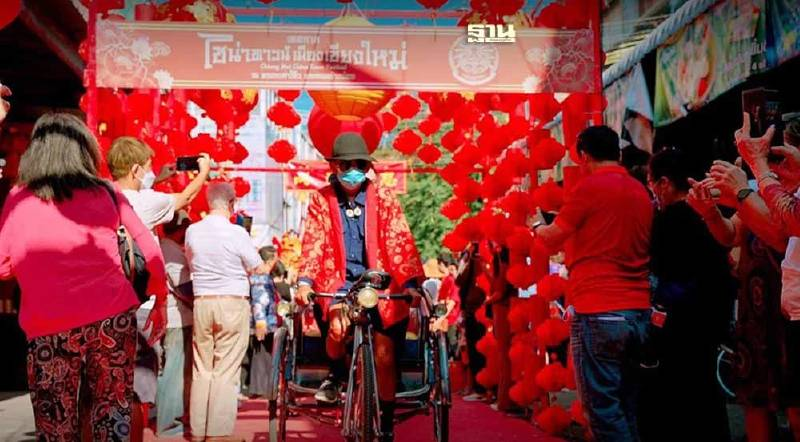
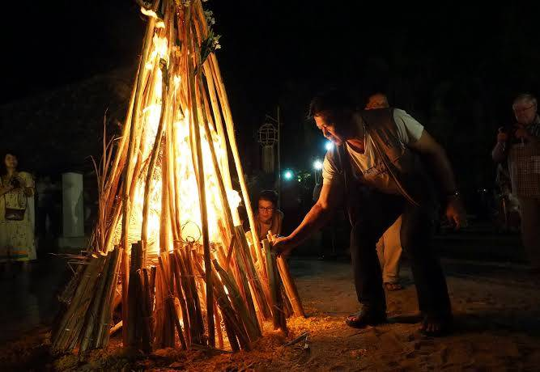
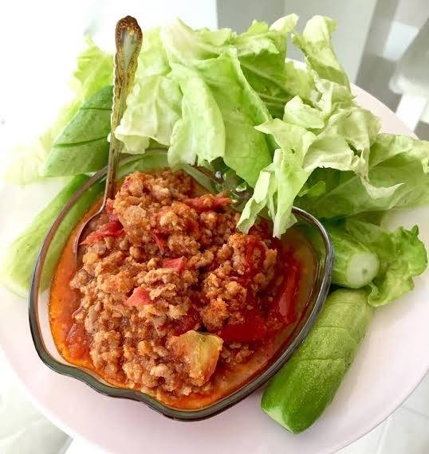
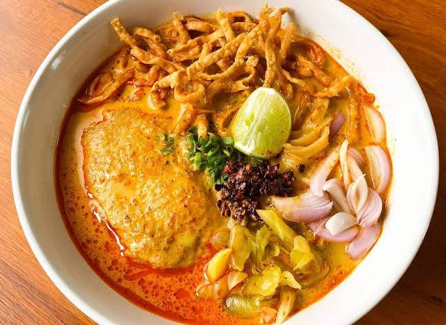
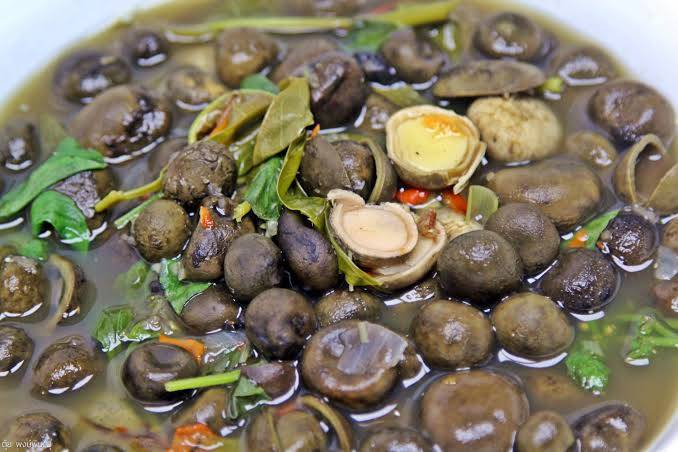

งานตรุษจีนไชน่าทาวน์เมืองเชียงใหม่

งานตรุษจีนไชน่าทาวน์เมืองเชียงใหม่ ที่จัดขึ้นในช่วงประมาณปลายเดือนมกราคมของทุกปี บริเวณตรอกเล่าโจ๊ว และถนนช้างม่อย อำเภอเมืองเชียงใหม่ โดยเมื่อถึงวันงาน ทั่วทั้งบริเวณนี้จะเต็มไปด้วยสีสันของโคมไฟ การประดับประดาสไตล์จีนล้านนาอันเป็นเอกลักษณ์ นอกจากนี้ยังมีกิจกรรมอีกมากมาย ไม่ว่าจะเป็นการเชิดสิงโต การแสดงดนตรีจีน และการแสดงศิลปะการต่อสู้ นอกจากนี้ยังมีการจำหน่ายอาหารและสินค้าพื้นเมืองจากชาวจีนที่อาศัยอยู่ในเชียงใหม่อีกด้วย
ประเพณีปอยส่างลอง

ประเพณีบวชลูกแก้วหรือที่ชาวไทใหญ่เรียกว่า ประเพณีปอยส่างลอง มักจัดขึ้นในช่วงเดือนมีนาคมถึงเดือนพฤษภาคม โดยจัดประมาณ ๓-๕ วัน เป็นประเพณีทางพุทธศาสนาที่จัดให้ลูกหลานเด็กผู้ชายที่มีเชื้อสายไทใหญ่อายุตั้งแต่ ๑๒ ปีขึ้นไป พบในจังหวัดแม่ฮ่องสอนและในจังหวัดเชียงใหม่บางอำเภอ
ประเพณีตานหลัวหิงไฟ

อีกหนึ่งประเพณีจังหวัดเชียงใหม่ที่เก่าแก่ฉบับล้านนาแท้ ๆ โดยเมื่อถึงวันประเพณี (ประมาณเดือนธันวาคมถึงเดือนมกราคมของแต่ละปี) ชาวบ้านและพระสงฆ์จะร่วมมือกันเก็บไม้ฟืนจากป่าหรือสวนมากองรวมกันเป็นรูปทรงต่าง ๆ จากนั้นในตอนเช้ามืด เจ้าอาวาสจะจุดไฟเผากองฟืน เสียงระเบิดของไม้ไผ่จะปลุกชาวบ้านให้ตื่นมาร่วมทำบุญที่วัด
3 อาหารพื้นบ้านที่ต้องลอง

น้ำพริกอ่อง ข้าวซอย แกงเห็ดเผาะ